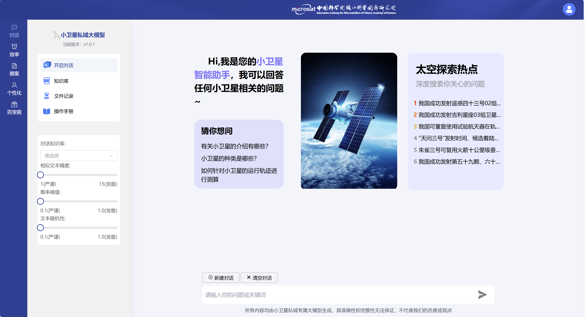
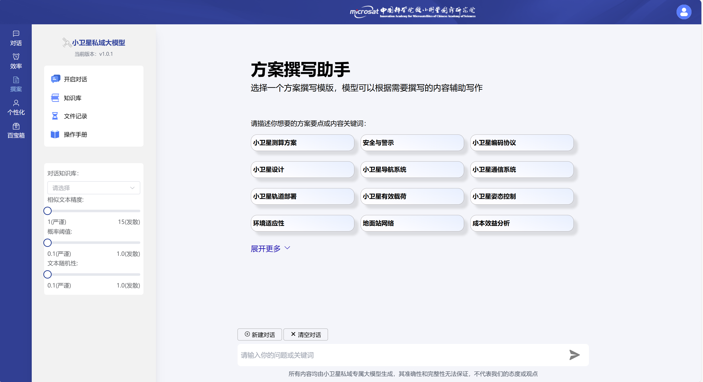
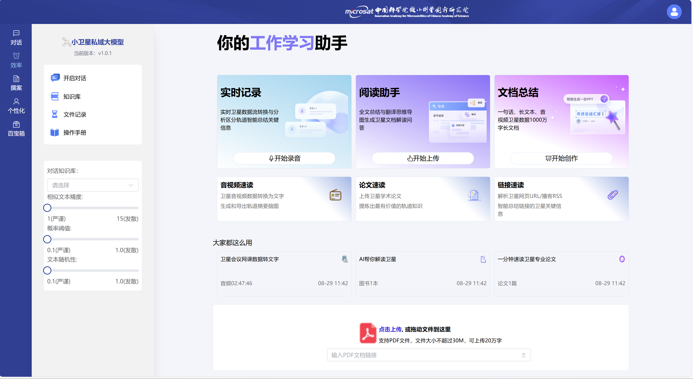
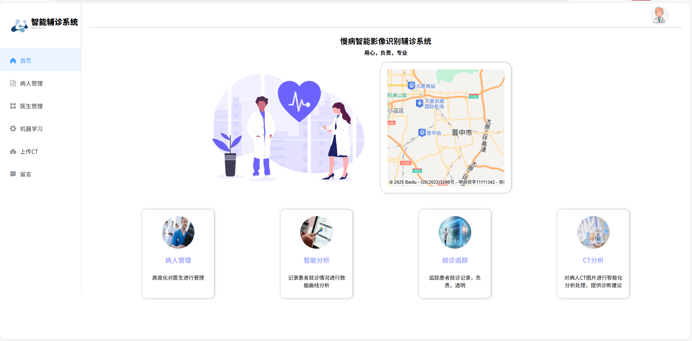
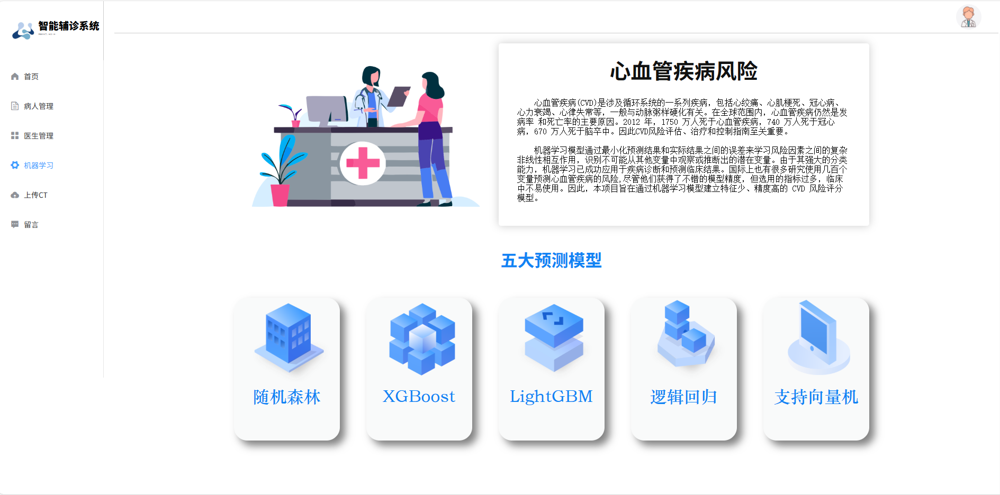
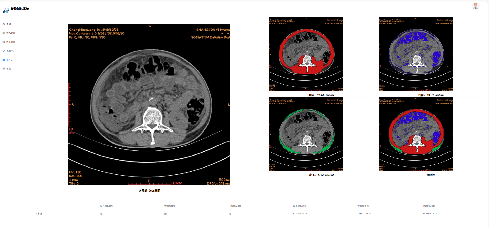
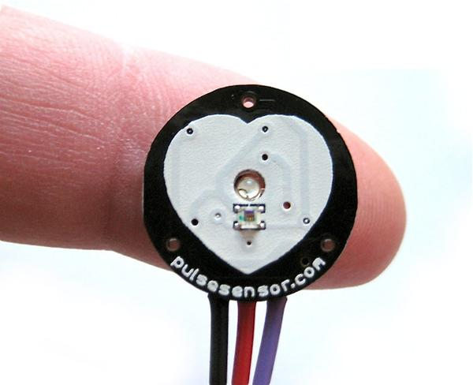
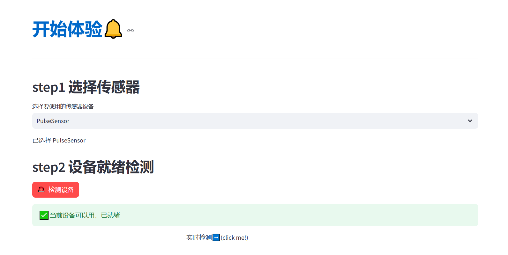
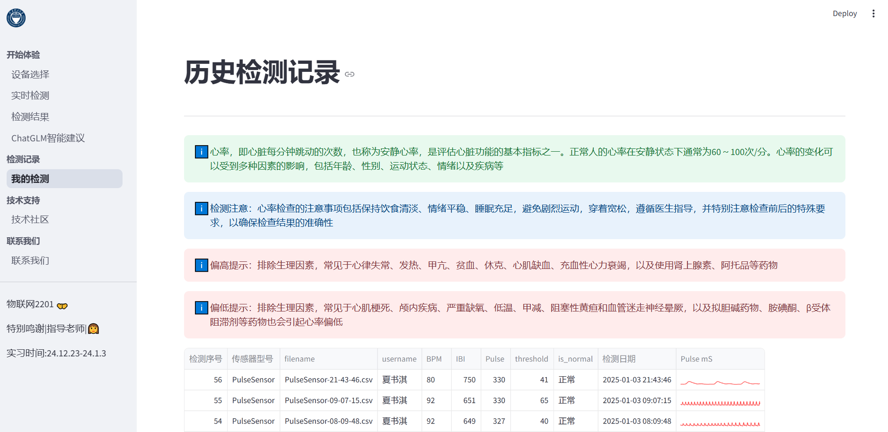
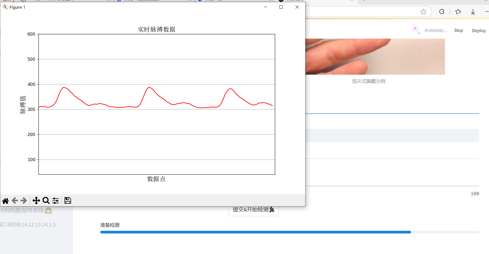

Shuqi Xia
Major in IOT-TYUT
📍 Shanxi | 🏡 GuangZhou
📫 xiashuqi1124@gmail.com
✅Projects
-
🚀 Satellite-based LLM RAG System »
  
Role: Algorithm Programming & Backend Development
🔗https://github.com/Qi2212/small-satellite-large-model
Collaborating Institutions: Institute of Microsatellite Innovation, Chinese Academy of Sciences
Advisors: Professor Zheng, Dr. Zhao
Project Overview: Developed a satellite domain-specific deployment model using Qwen as the base model and built an RAG framework based on Milvus vector database, creating a large language model platform for internal networks and confidential organizations.
-
🏥 Smart diagnostic assistant system »
  
Role: Segmentation Algorithm & Algorithm Backend Maintenance
Collaborating Institutions:Changzhi Medical College
Advisors: Professor Zheng, Dr. Zhao
Project Overview: The system integrates a machine learning algorithm for early diabetes screening, body composition segmentation, lung segmentation, and provides disease analysis suggestions through intelligent algorithms, assisting doctors in diagnosis and treatment.
-
🏥 IoT-Based Intelligent Heart Rate Monitoring System »
   
Role: LLM Integration & MCPU Serial Communication
🔗https://github.com/Qi2212/PulseSensor_Visual
Project Overview: Developed an intelligent heart rate monitoring system using a Pulse Sensor and Arduino R3, featuring an upper computer interface for real-time monitoring, large language model–powered intelligent suggestions, and sensor data acquisition.